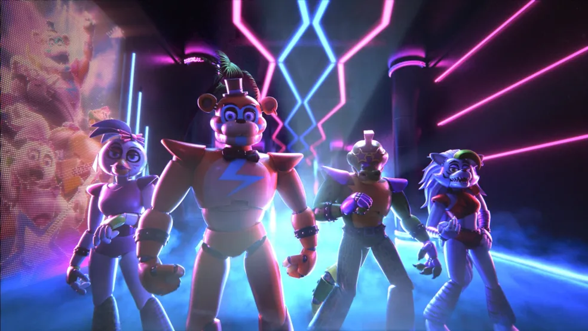

Em *Security Breach*, os jogadores exploram um grande shopping com várias atrações e lojas, enquanto enfrentam uma série de novos animatrônicos. O jogo é em mundo aberto, com mais liberdade para explorar e interagir. Caçada: O jogador deve evitar outros animatrônicos Glamrock, agora hostis. Aftons Retornam: O jogo sugere que William Afton continua ativo como Burntrap, mesmo após ser derrotado várias vezes.
